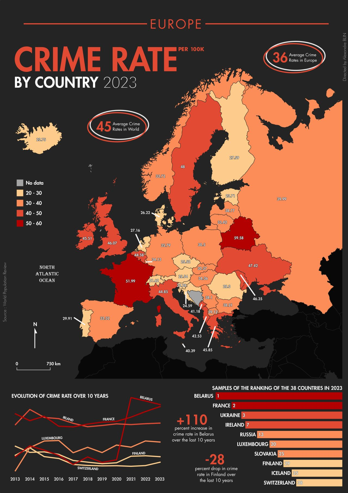
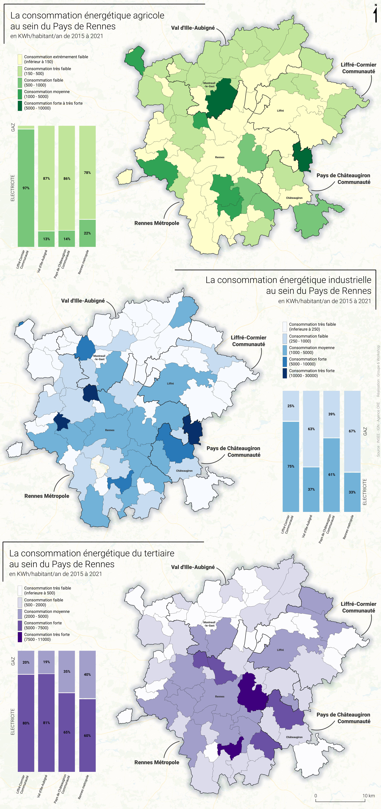

Collisions avec des animaux en Bretagne - M1 | Semestre 2
À partir des données publiques mises à disposition par la Direction Régionale
de l'Environnement, de l'Aménagement et du Logement (DREAL)
de Bretagne, il est possible d'étudier avec précision les collisions
d'animaux sur plusieurs années (ici entre 2014 et 2021).

Taux de criminalité en Europe - Réalisation personnelle
Le site World Population Review a publié les statistiques du
taux de criminalité pour l'année 2023, détaillant les données par pays
du monde. Le taux de criminalité est déterminé en divisant le nombre total
de crimes, toutes catégories confondues, par la population, puis en multipliant
le résultat par 100 000. Cette méthodologie permet d'obtenir un chiffre
représentatif du nombre de crimes pour 100 000 habitants.

L'offre de transport à Angers - M2 | Semestre 1
Utilisation des données GTFS publiques pour étudier l'offre de transport des
principaux bus urbains dans la ville d'Angers. En analysant la répartition
géographique des habitations via une ventilation, il est possible de réaliser
une évaluation du niveau d'accessibilité des résidents d'Angers à ces lignes de bus.

Consommation énergétique dans le Pays de Rennes - M2 | Semestre 1
Dans le cadre du workshop organisé par Institut d'Aménagement et d'Urbanisme de
Rennes (IAUR), j'ai eu l'opportunité de collaborer avec des étudiants en
urbanisme sur la révision du Schéma de Cohérence Territoriale (SCoT) du Pays de
Rennes. Notre thème de travail portant sur l'énergie, j'ai réalisé
une carte thématique, parmi d'autres, sur les différents types de consommation
énergétique et des secteurs de consommation.
